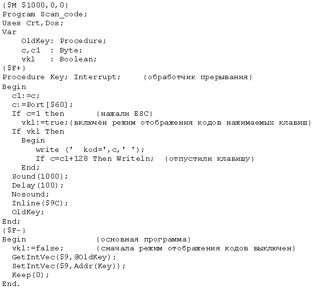
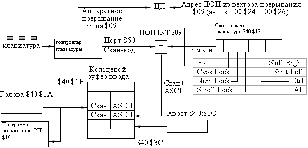

Методические указания в формате Microsoft Word
Лабораторные работы основаны на лекционном материале и выполняются после изучения соответствующего теоретического раздела. В методических указаниях к лабораторным работам дополнительно рассматривается необходимый для их выполнения теоретический материал. Помимо этого, конкретно каждая работа снабжена подробными методическими указаниями, сопровождающими текст задания. Использовать любую открытую среду разработки для языка высокого уровня(рекомендован язык Pascal).
Начальные данные во все программы передавать с помощью параметров командной строки. При запуске любой программы без параметров выводить образец требуемого формата ввода командной строки.
Резидентная программа, использующая прерывания, не может быть запущена из интегрированной среды программирования. Следует создавать на диске exe-модуль и запускать его из командной строки.
Необходимо предусмотреть обработку любых возможных ошибок, т.е. программа не должна “зависать” ни при каких начальных данных, а в случае ошибки выдавать соответствующее сообщение и завершать работу.
По каждой лабораторной работе необходимо выполнять отчёт, включающий в себя:
На проверку преподавателю помимо отчёта о выполнении работы обязательно предоставлять как исходный код, так и откомпилированный модуль (exe-файл) программы. Если ответ на контрольные вопросы предполагает изменение кода, то следует прилагать все варианты файлов с пояснениями в отчёте, какой из файлов к какому вопросу относится. Если изменение кода незначительное (одна – две строки, не более), то допускается сделать только соответствующие пояснения в отчёте – при ответе на соответствующий вопрос указать: “в программе должны быть сделаны следующие изменения…” (например, “строку с №… необходимо заменить на ... такую-то…” или “условие … заменить на …”)
Прерывания. Обработка прерываний
Здесь приведен общий теоретический материал по разделу “Прерывания”, необходимый для написания программ-обработчиков во всех без исключения лабораторных работах, поэтому рекомендуется внимательно его изучить перед выполнением лабораторных работ. Дополнительные сведения, необходимые для выполнения каждой конкретной работы, приводятся непосредственно перед заданием на неё.
Понятие прерываний. Виды прерываний (см. теоретический материал 1.5)
Обработчики прерываний представляют собой готовые процедуры, вызываемые компьютером для выполнения определенных задач. Механизм прерываний позволяет согласовывать параллельную работу отдельных устройств вычислительной системы и реагировать на особые состояния, возникающие при работе процессора. Главные функции механизма прерываний – это распознавание или классификация прерываний; передача управления соответствующему обработчику прерываний; корректное возвращение к прерванной программе. Для быстрого перехода от прерванной программы к обработчику и обратно используется таблица, содержащая перечень всех допустимых прерываний и адреса соответствующих обработчиков.
Для корректного возврата в прежнее место прерванной программы необходимо сохранить контекст этой программы, включающий в себя контекст процессора и контекст памяти (см. теоретический материал 1.4, 1.5). Для этого его адрес CS:IP сохраняется в системном стеке вместе с регистром флагов. Затем в CS:IP загружается адрес программы обработки прерывания и ей передается управление. После окончания её выполнения возвращаются старые значения CS:IP и регистра флагов, давая возможность продолжить выполнение прерванной программы с того же места.
Прерывания подразделяются на два основных класса: внешние (асинхронные) и внутренние (синхронные).
Внешние прерывания являются аппаратными и представляют собой асинхронные события, т.е. такие, которые возникают независимо от кода, исполняемого процессором в данный момент; они генерируются внешним по отношению к процессору устройством. Посредством аппаратного прерывания аппаратура информирует процессор о том, что произошло событие, требующее немедленной реакции. Например, это могут быть прерывания: от таймера, от внешних устройств (по вводу/выводу), по нарушению питания, от другого процессора. Прерывания таймера используются операционной системой при планировании процессов. Каждое аппаратное прерывание имеет свой собственный номер, в соответствии с которым и выполняется его обработка.
Внутренние прерывания связаны с выполняемым кодом (т.е. являются синхронными событиями) и подразделяются на программные и исключительные ситуации. Программные прерывания аналогичны обычным процедурам, выполнение которых осуществляется операционной системой. При выполнении программного прерывания может быть вызвано аппаратное прерывание.
Адреса программ обработки прерываний называются векторами, каждый из которых имеет длину 4 байта. В первом слове хранится значение IP, во втором – CS. Вектор для прерывания 0 начинается с ячейки 0000:0000 в таблице векторов, для прерывания 1 – с ячейки 0000:0004, и т.д. Например, 4 байта, начинающиеся с адреса 0000:0020, в которых содержится вектор прерывания $8 (прерывание времени суток – здесь и далее использована принятая в Паскале нотация шестнадцатеричного числа), содержат A5FE00F0. Поскольку младший байт слова расположен сначала и порядок – IP:CS, это 4-байтовое значение переводится в F000:FEA5. Это и есть начальный адрес программы, выполняющей прерывание $8.
Выполнение аппаратных прерываний зависит от значения флага прерывания в регистре флагов. Когда он равен 0, разрешены все прерывания, которые разрешает маска. Когда он равен 1, все аппаратные прерывания запрещены. Чтобы запретить прерывания, необходимо установить флаг в 1, для чего используется инструкция CLI (Close Interrupt). Для очистки этого флага и восстановления прерываний используется инструкция STI (Set Interrupt).
Следует избегать отключения прерываний на длительный период!
Программа-обработчик прерывания. Резидентный обработчик
Отличительным свойством резидентных программ является то, что они после своего завершения остаются в памяти компьютера, а ОС защищает занятую ими часть памяти от повторного использования. Обычно такие программы называют TSR (Terminate-but-Stay-Resident). Их использование позволяет реализовать т.н. “пассивное” мультипрограммирование в однопрограммной системе MS-DOS – периодическая активизация TSR дает возможность одним программам выполняться на фоне других.
TSR-программа состоит из двух функционально различных секций: резидентной и инициализирующей. Инициализирующая часть запускается только однажды; резидентная часть может содержать один или несколько обработчиков прерываний.
Инициализирующая часть выполняет следующие обязательные действия: 1) устанавливает связь резидентного обработчика прерываний с тем или иным прерыванием системы (осуществляет перехват прерывания); 2) резидентно завершает TSR. Дополнительные действия этой части могут включать в себя, например, предотвращение – в случае необходимости – повторной установки TSR, освобождение памяти, занятой TSR, перехват каких-то других прерываний для повышения надежности работы TSR.
В резидентной части каждый обработчик должен начинаться секцией кода, сохраняющей регистры процессора, а завершаться восстановлением значений этих регистров. Компилятор сам выполняет эти действия, если процедура обработки объявляется с использованием директивы interrupt. В таком случае в начало кода процедуры обработки автоматически подставляется секция сохранения регистров, а в конце выполняется корректный возврат из обработчика прерывания.
Передача параметров в обработчик прерывания при необходимости осуществляется через регистры. Тогда в заголовке процедуры обработки прерывания в качестве параметров указываются имена регистров: Procedure Inter (Flags, CS, IP, AX, BX, CX, DX, SI, DI, DS, ES, BP: Word); Interrupt; при этом необходимо соблюдать указанный порядок, но можно упоминать и использовать только часть параметров (например, первые три).
Все процедуры типа interrupt относятся к типу far. По умолчанию компилятор генерирует выходной код для “ближней” модели (директива near), т.е. область действия ограничивается рамками модуля, в котором описана процедура – это т.н. внутрисегментный вызов процедуры, когда процедура и вызывающая её программа находятся в одном сегменте. Для процедуры обработки прерывания используется межсегментный вызов, т.е. необходимо генерировать “дальнюю” модель, для чего следует использовать соответствующую директиву компилятора far. Для этого в тексте программы перед описанием процедуры обработки прерывания требуется указать директиву {$F+}, а после этой процедуры снова установить прежний режим директивой {$F–}.
В качестве основных схем включения обработчиков прерывания, входящих в состав резидентной части TSR, обычно используются каскадное включение или переопределение старого обработчика.
Каскадное включение прерываний
Иногда бывает полезным добавить код к стандартному обработчику прерывания. Каскадное включение – это такая установка в систему нового обработчика прерывания, при которой он получает управление в случае возникновения аппаратного или программного прерывания, выполняет какие-то свои действия, а затем вызывает старый (стандартный) обработчик этого прерывания. Например, рассмотрим программы, которые используют тот факт, что весь ввод с клавиатуры поступает через функцию 0 прерывания $16 BIOS. Все прерывания ввода с клавиатуры DOS вызывают прерывание BIOS для получения символа из буфера клавиатуры. Поэтому, если модифицировать прерывание $16 таким образом, чтобы оно выполняло дополнительные функции, то любая программа будет получать эти функции (при нажатии клавиши) независимо от того, какое прерывание ввода с клавиатуры она использует.
Для этого нужно написать резидентную процедуру, которая предшествует или следует за соответствующим прерыванием и может вызываться при вызове прерывания DOS или BIOS.
Например, в случае прерывания $16 нужно написать процедуру (пусть она называется NewProc) обработки этого прерывания и указать на неё вектором $16. Оригинальное значение вектора $16 тем временем переносится в какой-либо дополнительный вектор. Тогда новая процедура помимо своих собственных действий вызывает этот вектор, чтобы использовать стандартный обработчик прерывания $16. В новой процедуре может содержаться любой код как до, так и после вызова прерывания по старому вектору. После этого, если какая-либо программа вызывает прерывание $16, управление сначала передается процедуре NewProc. Она после каких-то своих действий вызывает оригинальное прерывание $16 (путем вызова дополнительного вектора), а по его завершении управление возвращается назад к NewProc, из которой затем происходит возврат в то место программы, откуда поступил запрос на прерывание $16.
Итак, план действий:
Далее в основной программе:
Ниже приведён пример программы, которая обрабатывает прерывание клавиатуры и каждое нажатие на клавишу сопровождает звуком. После нажатия на клавишу ESC программа начинает дополнительно выводить коды нажатых клавиш, причём код нажатия и код отжатия различаются на 128 и выводятся в одной строке. Коды следующей нажатой клавиши – на следующей строке и т.д. Для того чтобы проверить, является ли очередное прерывание клавиатуры сигналом отпускания клавиши, используется дополнительная переменная c1, в которую сохраняется предыдущее значение, считанное с порта клавиатуры. Если они различаются на 128 – клавиша отпущена.
Перед процедурой – обработчиком прерывания включается режим “дальней модели”, после него он выключается. В конце нового обработчика вызывается стандартный обработчик, который предварительно был сохранён под именем OldKey.

Теоретический материал
Работой клавиатуры управляет электронная схема, называемая контроллером клавиатуры. В его функции входит распознавание нажатой клавиши и помещение закреплённого за ней кода в выходной регистр (порт) с номером $60. Поступающий в порт код клавиши называется скан-кодом и является в некотором роде её порядковым номером. При этом каждой клавише соответствуют два скан-кода, отличающиеся на 128. Меньший код (код нажатия) засылается в порт $60 при нажатии клавиши, больший код (код отпускания) – при отпускании клавиши. Такая система позволяет, например, в случае, когда буквенная клавиша удерживается в нажатом состоянии (т.е. поступил код нажатия, но в течение некоторого интервала времени не поступило кода отпускания) перейти в режим генерации многократного кода нажатия.
Каждое нажатие и каждое отпускание клавиши вызывает сигнал аппаратного прерывания, заставляющий процессор прервать выполняемую программу и перейти на программу обработки прерывания (ПОП) от клавиатуры, которая вызывается через вектор $09 (её часто называют программой INT $09). Программа INT $09 работает, кроме порта $60, ещё с двумя областями оперативной памяти: с кольцевым буфером ввода (адреса от $40:$1E до $40:$3D), куда в конце концов помещаются коды ASCII нажатых клавиш, и словом состояния (или словом флагов) клавиатуры (адрес $40:$17), где фиксируется состояние управляющих клавиш (<Shift>, <Ctrl>, <Caps Lock> и др. – см. рисунок).

Программа INT $09, получив управление в результате прерывания от клавиатуры, считывает из порта $60 скан-код и анализирует его значение. Если он принадлежит управляющей клавише и представляет собой код нажатия, то в слове флагов клавиатуры устанавливается флаг, соответствующий нажатой клавише (например, при нажатии <Right Shift> устанавливается бит 0, при нажатии <Left Shift> – бит 1, <Ctrl> – бит 2, <Alt> – бит 3). Если управляющая клавиша отпускается, соответствующий ей бит сбрасывается в 0.
При нажатии любой другой клавиши программа INT $09 считывает из порта $60 её скан-код нажатия и по таблице трансляции скан-кодов в коды ASCII формирует двухбайтовый код, старший байт которого содержит скан-код, а младший – код ASCII. При этом скан-код характеризует клавишу, а ASCII-код определяет закреплённый за ней символ. Поскольку за каждой клавишей закреплено по нескольку символов (не менее двух), то каждому скан-коду соответствует несколько ASCII-кодов. При формировании двухбайтового кода программа INT $09 анализирует состояние флагов. Например, клавише <Q> соответствует скан-код $10 (десятичное 16), ASCII-код буквы Q – $51 (81), буквы q – $71 (113). Если <Q> нажата при нажатой клавише <Shift>, то будет сформирован двухбайтовый код $1051, иначе – код $1071. Если предварительно была нажата клавиша <Caps Lock>, то результат будет обратным (включенный режим <Caps Lock> аннулирует последующее нажатие <Shift>).
При формировании двухбайтовых кодов некоторым специальным клавишам (например, F1 – F10, <Home>, <End>, <® >, < > и т.п.) в таблице трансляции, с которой работает программа INT $09, соответствует нулевой код ASCII. Двухбайтовые коды, имеющие нулевой младший байт, называются расширенными кодами ASCII и используются для управления программами.
Полученный в результате трансляции двухбайтовый код засылается программой INT $09 в кольцевой буфер клавиатуры, объем которого составляет 15 машинных слов. Коды символов извлекаются из буфера по принципу FIFO. За состоянием буфера следят два указателя: в хвостовом указателе (слово по адресу $40:$1C) хранится адрес первой свободной ячейки, в головном указателе ($40:$1A) – адрес самого старого кода, принятого с клавиатуры и ещё не востребованного программой. Когда буфер пуст, оба указателя указывают на его первую ячейку. В ходе заполнения буфера хвостовой указатель смещается (по 2 байта) до последнего адреса и вновь возвращается на начало – и так далее по кольцу. Аналогично перемещается головной указатель при считывании кодов. Если при заполнении буфера не происходит считывания поступивших в него кодов (readkey), то при вводе более 16 символов приём новых кодов блокируется, и последующие нажатия на клавиши сопровождаются предупреждающими звуковыми сигналами (переполнение буфера).
Для считывания кода нажатой клавиши выполняемая программа вызывает прерывание INT $16, которое активизирует драйвер клавиатуры BIOS. Драйвер считывает из буфера коды, смещая при этом головной указатель; таким образом, программный запрос на ввод с клавиатуры выполняет приём кода не прямо с клавиатуры, а из кольцевого буфера.
Задание для выполнения лаб. работы №1
Написать программу, которая должна “озвучивать” клавиатуру, т.е. после запуска этой программы нажатие любой клавиши на клавиатуре будет сопровождаться звуковым сигналом. Клавиатура при этом должна оставаться работоспособной, т.е. продолжать выполнять свои основные функции в нормальном темпе.
Программа должна быть резидентной, т.е. оставаться в памяти после своего завершения.
В качестве пробного варианта длительность звукового сигнала и частоту задать константами в программе. Когда будет получена устойчивая работа программы, изменить её таким образом, чтобы длительность звукового сигнала и его частота задавались в качестве параметров при запуске программы.
Необходимо предоставить пользователю возможность “выключать” и “включать” заново звуковое сопровождение работы клавиш. Использовать для “выключения/включения” звука нестандартную комбинацию клавиш: сочетание нажатой клавиши <Shift> с какой-либо ещё, например, <Shift>+<Esc> …
Контрольные вопросы
Теоретический материал
Системные часы выдают импульсы 18,2 раза в секунду. 4-байтовый счетчик этих импульсов хранится в памяти по адресу 0040:006C (младший байт хранится первым). Каждый импульс инициирует прерывания таймера (номер $8), и именно это прерывание увеличивает показания счётчика. Поскольку это прерывание аппаратное, оно выполняется всегда, если только разрешены аппаратные прерывания.
Прерывания таймера принято использовать для организации работы программы в режиме реального времени – для этого требуется написать свой обработчик прерываний таймера, осуществив его каскадное включение (см. общую теоретическую часть к лабораторным работам по теме “Прерывания”). При этом удобно применять собственный специальный счётчик, который подсчитывает количество поступивших прерываний (импульсов) таймера. По достижении этим счётчиком некоторых заданных значений можно выполнять необходимые действия (включать/выключать звуковой сигнал, менять частоту звука, осуществлять задержку некоторых операций, запускать или приостанавливать какие-то программы и т.п.).
Таким образом, в собственном обработчике прерываний таймера достаточно только изменять значение счётчика импульсов и проверять, достигло ли оно требуемой величины. Естественно, после выполнения всех необходимых действий следует передать управление стандартному обработчику прерываний таймера.
Например, если необходимо, чтобы некоторое действие выполнялось в течение 10 секунд, перед его началом следует установить счётчик прерываний в 0, и при каждом импульсе увеличивать значение счётчика. Когда счётчик достигнет величины 182, выполнение действия прекратить. Таким образом можно контролировать длительность требуемого действия с точностью до одного импульса таймера (1/18,2 доля секунды).
Категорически запрещено в процедуре – обработчике прерываний таймера использовать стандартную процедуру задержки (delay)!
Задание для выполнения лаб. работы №2
Написать резидентную программу, которая будет работать, как “будильник” – через заданный интервал времени издавать короткий звуковой сигнал – “тикать” (например, через 1–2 секунды). По завершении более длительного интервала времени (от нескольких секунд до нескольких минут или часов) должен раздаваться более продолжительный мелодичный звуковой сигнал, имитирующий звонок будильника.
Длительность звукового сигнала – “тиканья” – не должна быть слишком большой. Её следует задавать в программе в пределах от 1/10 до ½ доли секунды.
По окончании “звонка будильника” “тиканье” должно продолжаться. “Звонок” должен раздаваться только один раз.
В то время, когда звучит “звонок”, не должно быть слышно “тиканья” (звонок может длиться в течение нескольких секунд, и в этот интервал времени теоретически могут попасть звуки “тиканья”).
Для получения эффекта “мелодичного звонка” следует использовать несколько звуковых частот с различной продолжительностью звучания каждой из них.
Временной интервал, через который должно происходить “тиканье” (в секундах – целое число секунд), задавать с клавиатуры в качестве параметра; время, через которое должен прозвонить будильник (в минутах – их число может быть дробным), тоже задавать в качестве параметра. Отсчёт времени для “звонка” вести с момента запуска программы.
Контрольные вопросы
Теоретический материал
В мультипрограммных вычислительных системах осуществляется параллельная работа нескольких программных приложений. Этот параллелизм может быть физическим, когда происходит одновременная работа нескольких физических устройств, или логическим, когда осуществляется псевдопараллельное выполнение приложений за счет быстрого переключения процессора с одного приложения на другое.
Логический параллелизм реализуется путем использования режима квантования, когда каждой из выполняющихся задач выделяется некоторый (небольшой) квант процессорного времени. Обычно величина этого кванта составляется несколько десятков миллисекунд. При этом для внешнего наблюдателя создается полная видимость одновременности работы выполняющихся задач.
Логический параллелизм может быть организован средствами операционной системы или же самим программистом посредством использования обработчика прерываний таймера.
При реализации мультипрограммной работы средствами ОС прерывание работы текущего потока сопровождается сохранением его контекста для последующего корректного возврата в прерванную программу (см. в лекциях раздел 1.5 “Прерывания”). В случае искусственной организации программистом параллельного режима работы потоков прерывание потока, как правило, осуществляется в заранее определенных местах. Поэтому для корректного продолжения работы при последующем получении управления возможно использовать глобальные переменные, а управление переключениями осуществлять при помощи таймера.
Одной из классических схем теории ОС является схема “производитель-потребитель”. Каждый процесс в вычислительной системе может быть охарактеризован числом и типом ресонтрольн, которые он использует (потребляет) и освобождает (производит). Независимо от конкретного типа ресонтрольн для описания поведения таких процессов используется схема “производитель-потребитель”. Процесс-производитель вырабатывает информацию и затем добавляет ее в буферную память; параллельно с этим процесс-потребитель забирает информацию из буферной памяти и затем обрабатывает ее. Например, потребителем может являться процесс вывода, удаляющий запись асинхронно из буферной памяти и печатающий ее, а производителем – процесс, выполняющий некие вычисления и помещающий результаты в буферную память.
Задание для выполнения лаб. работы №3
Написать программу, которая будет эмулировать параллельную работу некоторых потоков. Потоки должны работать циклически. В качестве модели использовать схему “производитель – потребитель”. Один поток (производитель) может помещать случайные (или какие-то определенные – например, только четные числа или квадраты целых чисел и т.п.) числа в буфер (массив заданного размера), для наглядности поток-производитель должен эти числа выводить на экран. Другой поток (потребитель) забирает числа из этого буфера. Для контроля также выполнять вывод на экран чисел, взятых потоком-потребителем из буфера. Вывод разными потоками выполнять в разные строки и/или разным цветом; дополнительно выводить на экран индикатор того, какой именно поток работает в настоящий момент, а также содержимое буфера и текущий процент его заполненности.
На экране параллельная работа потоков может быть представлена следующим образом:
Верхняя строка (производитель): ячейка для вывода текущего сгенерированного числа, признак активности потока (слово, символ, цвет), сообщение о переполнении буфера в случае этого события. Возможно, ещё какая-то полезная информация, например, номер заполняемой ячейки.
Нижняя (или вторая) строка (потребитель): ячейка для вывода текущего прочитанного числа, признак активности потока (слово, символ, цвет), сообщение о пустом буфере в случае этого события. Возможно, информация о номере считываемой из буфера ячейки.
В середине экрана: сам буфер, в который числа добавляются потоком-производителем и из которого считываются (удаляются или перекрашиваются, попадая при этом в его ячейку в нижней строке экрана) потоком-потребителем. Считывание чисел можно производить по принципу стека или очереди. При считывании по принципу очереди после завершения работы потребителя какое-то количество чисел из начала буфера исчезнет, следовательно, буфер будет перемещаться по экрану и в какой-то момент его потребуется переписать заново, от начала.
Отдельной строкой или в углу экрана отображать процент заполненности буфера.
Предусмотреть обработку критических ситуаций:
1) Случай, когда потребителю предоставлено управление, а буфер данных пуст – тогда активный поток должен напрямую отдать управление производителю, а сам уйти в режим ожидания. При этом вопрос с квантом времени для производителя может быть решён по-разному. Например, остаток недоработанного потребителем кванта может быть передан производителю, либо ему может быть выделен новый квант времени.
2) Случай, когда управление предоставлено производителю, а буфер полон и записывать результаты некуда – поток-производитель должен заблокироваться до появления свободного места в буфере и запустить поток-потребитель. Вопрос с квантом может решаться аналогично.
Для того чтобы было возможно пронаблюдать работу потоков в замедленном режиме, в каждом из потоков следует поставить дополнительную задержку (стандартный delay), величину которой задавать с клавиатуры при запуске программы, в качестве параметра командной строки. При запуске без параметров выводить сообщение примерного вида: “Программа запущена со стандартной задержкой, величина которой =…” и формат запуска программы для задания желаемой задержки.
Потоки при работе чередуются случайным образом; регламентировать их работу с помощью таймера (выделять каждому кванты времени, величина которых тоже случайна – в некотором диапазоне). При этом может складываться ситуация, что один и тот же поток несколько раз подряд получит управление. Таймер по окончании выделенного потоку кванта времени изменяет статус этого потока с активного на пассивный, в результате чего внутренний цикл этого потока должен завершиться.
Внутри обработчика прерываний таймера не может находиться вызовов процедур – потоков! Вызовы процедур должны происходить в бесконечном цикле в основной программе. В обработчик прерываний таймера вообще нельзя включать никакие действия, требующие длительного выполнения, например, вызовы циклических процедур, или процедур, работающих с графикой или с диском.
Для выхода из программы предусмотреть какую-то специальную клавишу или комбинацию клавиш (выбор по желанию программиста), информация о ней должна быть известна пользователю – помещена на экране. При нажатии этой клавиши происходит окончание работы потока-производителя, а поток-потребитель закончит свою работу, только когда буфер будет исчерпан, т.е. выработанная информация будет полностью использована.
Контрольные вопросы